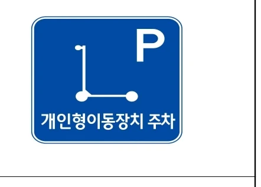

925. Điều nào sau đây đúng về mô tả liên quan đến biển báo an toàn?

- ①Là biển cảnh báo thông báo khu vực cấm đỗ phương tiện di chuyển cá nhân.
- ②Tại khu vực có biển báo này được lắp đặt, xe máy cũng có thể đỗ tạm thời.
- ③Tại khu vực có biển báo này được lắp đặt, ô tô con cũng có thể đỗ tạm thời.
- ④Là biển chỉ dẫn thông báo có bãi đỗ dành cho phương tiện di chuyển cá nhân.
Xem đáp án
Đáp án
④ Là biển chỉ dẫn thông báo có bãi đỗ dành cho phương tiện di chuyển cá nhân.
Căn cứ
Quy tắc thi hành luật giao thông đường bộ [Phụ lục 6] Biển chỉ dẫn 320-2. Biển báo đỗ xe thiết bị di động cá nhân. Đây là biển báo thông báo có bãi đỗ xe thiết bị di chuyển cá nhân và hướng dẫn người dân đỗ xe vào bãi đỗ xe thiết bị di chuyển cá nhân. Các khu vực đỗ xe được thiết lập bằng vạch trắng liền nét.
Phần căn cứ là bản dịch máy để tham khảo.